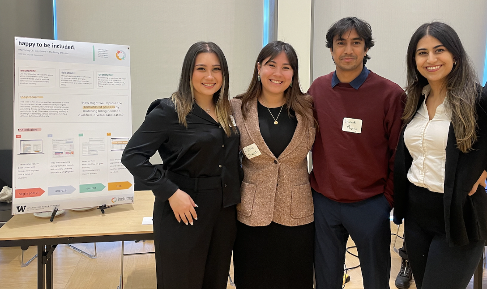

Happy to be included
Matching hiring needs to qualified, diverse candidates. Happy to be Included addresses the challenging task of balancing diverse hiring needs with finding the most qualified candidates. In a climate where diversity in the workplace is a priority, recruiters face the dilemma of maintaining quality while striving for inclusivity. This project aims to spot areas lacking diversity and offers practical solutions to source diverse, qualified candidates.
Post-project completion, I undertook the independent redesign of our UI, leveraging user research insights and project outcomes. This redesign aimed to optimize usability and better align the interface with user needs and project objectives.
Screen 1: Job Sourcing Recommendations
Screen 3: Job Board Recommendations

Our project received the prestigious 'Brave' award at the capstone showcase among 20 undergraduate teams, acknowledging our innovative approach in redefining recruitment processes. This recognition highlighted the risks we took in design, research, ideation, and prototyping.
My Team and I at the Capstone Showcase
The journey with 'Happy to be Included' was enriching, meeting class milestones, sponsor requirements, and team goals. Positive feedback from our sponsor, academic team, participants, and showcase attendees validated our efforts.
Engaging with our sponsor provided real-world application of our skills, guiding the project's direction and expanding our expertise.